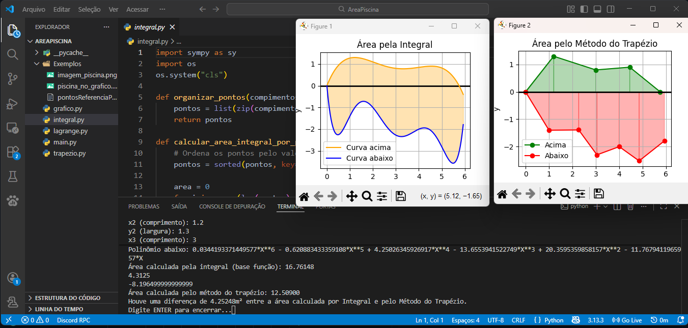
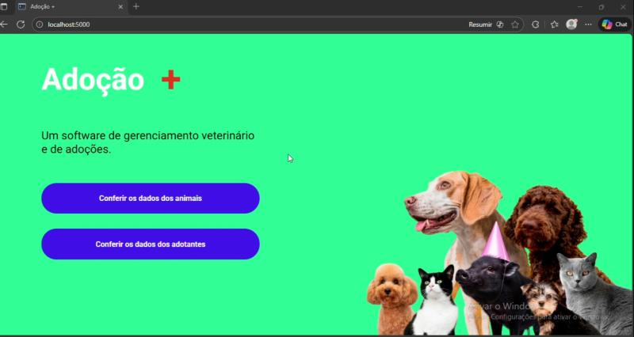

Área de uma Piscina
Programa em Python que calcula a área aproximada de uma piscina usando Integrais e Método do Trapézio.


Adoção +
Projeto desenvolvido em Python e Flask que possui a finalidade de cadastrar animais para adoção.